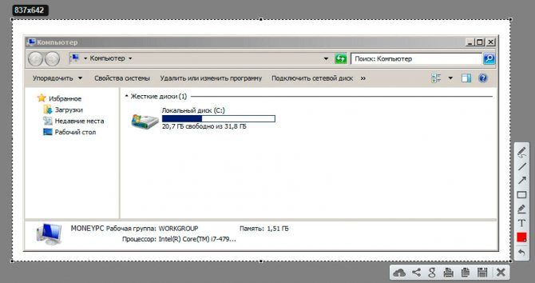

Как сделать скриншот экрана на компьютере: 5 лучших способов.
Что такое скриншот
Скриншот – это фотография экрана в определенный момент времени. Такой снимок может быть как всего экрана целиком, так и отдельной его части. Например, снимок только одного окна.
Для создания скриншотов на клавиатуре компьютера есть специальная клавиша Print Screen. Она также может называться PrtScr, Prt Sc, PrtScn или PrntScrn.
Нажав на кнопку Print Screen, экран компьютера сфотографируется. Но при этом не будет никаких щелчков или вспышек – снимок просто зафиксируется в памяти компьютера (буфере обмена).
Затем эту фотографию нужно вытащить наружу, а для этого вставить в какую-нибудь программу. Проще всего в Paint, так как это стандартная программа Windows, и она есть практически в каждом компьютере.
Важно! После нажатия клавиши Print Screen нельзя ничего копировать до того, как вы вставите снимок в программу. Иначе он заменится скопированной информацией.
Советы
Ещё прошу прочесть пару советов о том, как правильно делать скриншоты. Вроде бы ничего сложного нет, но как оказывается, многие люди делают их неправильно. В первую очередь скриншот должен быть максимально понятен другим пользователям, которым вы хотите его показать. Поэтому делать снимок всего экрана с большим количеством лишних деталей не нужно. А это самая часто встречаемая ошибка.
Особенно если вы готовите презентацию и хотите подчеркнуть какие-то детали. Старайтесь убрать все лишнее, но при этом выделить нужную область. Например, вы работаете в определенной программе, тогда вам необходимо выделить верхнюю часть окна, чтобы захватить название программы, а также главную область, где расположена нужная информация.
Нижнюю часть окна можно обрезать. Старайтесь сделать область максимально небольшую, чтобы захватить только самое необходимое.
Как сделать скриншот экрана
Через Paint
1. Нажимаем один раз на клавишу Print Screen на клавиатуре.
Если у вас ноутбук, то нужно нажать сочетание клавиш Fn и Print Screen – сначала одну клавишу, потом, не отпуская её, другую.
2. Щелкаем по кнопке Пуск и из списка выбираем Стандартные – Paint.
Или в строке поиска печатаем «paint» без кавычек и открываем программу
3. В окне программы нажимаем кнопку «Вставить».
Сразу после этого внутрь добавится фотография экрана. Снимок будет сделан в тот момент времени, когда вы нажимали клавишу Print Screen.
4. Обрезаем лишнее через «Выделить» и «Обрезать» вверху.
Сначала щелкаем по «Выделить».
Затем нажимаем левую кнопку мыши и, не отпуская её, обводим ту часть, которую нужно оставить. После этого нажмите на «Обрезать».
Если не получилось обвести с первого раза, щелкните за пределами выделенной области один раз левой кнопкой мыши – выделение сбросится.

5. Сохраняем снимок на компьютер. Для этого нажимаем на иконку сохранения вверху программы () или Файл – Сохранить.
Появляется окошко сохранения файла. Сначала в нём нужно выбрать то место на компьютере, куда мы хотим записать скриншот.
Затем нужно изменить название снимка и выбрать формат. Для этого щелкаем по полю «Имя файла» внизу и печатаем туда новое имя для скриншота. В поле формат выбираем PNG, либо JPG. После чего нажимаем «Сохранить».
Вот и всё! Полученный снимок теперь записан в указанном месте (пункт 5). Если вы выбрали Рабочий стол, то искать его нужно на экране компьютера.
На заметку. Таким образом мы фотографируем весь экран компьютера. Но если нужно сделать снимок только одного окна, то нажимать нужно не Print Screen, а сочетание клавиш Alt + Print Screen. На нотубуке: Fn + Alt + Print Screen.
Через Ножницы
Ножницы – это отдельная программа для создания скриншотов. Она удобнее, чем Paint.
«Ножницы» либо есть в Windows, либо нет. Это зависит от версии системы. Так что если вы через «Пуск» не можете найти эту программу, значит, ее просто нет в компьютере.
1. В строке поиска на панели задач или в Пуске напечатайте Ножницы и запустите приложение.
Появится окно программы.
2. Нажмите на кнопку «Создать» и выделите ту часть, которую хотите заскринить. Для этого просто нажмите на левую кнопку мыши и, удерживая её, обведите нужную часть.
Если окошко перекрывает то, что вы хотите снять, передвиньте его левой кнопкой мыши за шапку – там, где написано «Ножницы».
3. Как только вы отпустите левую кнопку мышки, выделенная область сфотографируется и добавится в небольшую программку.
Здесь есть пару инструментов для редактирования. Перо – что-то вроде карандаша для подчеркивания. Маркер – для обводки.
4. Сохраните изображение на компьютер через кнопку . Делается этот так же, как и в Paint.
Win + Print Screen
В Windows 8 и 10 сделать скрин можно автоматически – без вставки в программу и сохранения. Для этого достаточно нажать сочетание клавиш Win + Print Screen.
Сразу после этого снимок экрана запишется в папку. Чтобы его найти, зайдите в «Этот компьютер», откройте «Изображения» и «Снимки экрана».
Первый способ — Использовать инструмент ножницы
В системе Windows расположен инструмент «Ножницы» или «Snipping Tool», если используется английская версия. Встроенный инструмент делает снимок активного окна или определенную часть экрана.
Чтобы найти «Ножницы» на компьютере необходимо открыть меню «Пуск», и написать в поиске название программы «Ножницы».
Откроется вкладка, на которой можно выбрать какого размера будет будущий скриншот. Например, произвольная или прямоугольная форма.
А также, выбрать, чего именно сделать снимок, имеется в виду определенного окна или весь экран.
Бесплатные программы для создания скриншотов
LightShot
Скачать и установить LightShot вы можете с официального сайта app.prntscr.com/ru/ .
Как пользоваться. После запуска программа будет находиться в системном трее.
Нажмите клавишу Print Screen. Программа автоматически активирует окно для выбора области и создания снимка.
Панель инструментов:
- Карандаш – позволяет рисовать на снимке.
- Линия – рисует линии.
- Стрелка – рисует стрелки.
- Прямоугольник – позволяет начертить прямоугольную рамку.
- Маркер – используется для выделения.
- Текст – добавляет текст на снимок.
- Цвет – позволяет задать цвет для рисования и текста.
- Отменить – отменяет последнее действие.
- Загрузить на prntscrn.com – загружает изображение на сервер и публикует ссылку для его открытия.
- Поделиться в социальных сетях – позволяет делиться снимком в социальных сетях.
- Искать – ищет похожие изображения в интернете.
- Печать – распечатывает снимок на принтере.
- Сохранить – сохраняет изображение на компьютер.
Плюсы: небольшой размер; наличие собственного сервера для загрузки скриншотов.
Минусы: нет свежих обновлений софта от официального сайта.
Joxi
Скачать и установить программу вы можете с официального сайта joxi или в интернет-магазине chrome OCS Скриншотер - скрин в один клик
Как пользоваться. После установки программа будет находиться в трее. Нажмите на неё, и Joxi попросит ввести свой email для начала работы, то есть пройти регистрацию:
Вот как выглядит сама программа. Обзор инструментов:
- Фрагмент – выделение области для сохранения.
- Перемещение и трансформация – перемещение линий, текста и других элементов, нарисованных на снимке.
- Карандаш – рисование.
- Линия и Стрелка – рисование линий и стрелок.
- Текст – печать текста.
- Круг и прямоугольник – рисование круга и прямоугольника.
- Нумерация – добавление нумерации на снимок.
- Размытие – замазывание информации.
- Затемнение – оставит в поле зрения только выделенную область, а всё остальное затемнит.
- Цветовая палитра – выбор цвета рисования и цвета текста.
- Экран – захват всего экрана.
- История – откроет окно браузера с вашими снимками.
- Настройки – параметры программы.
Для сохранения документа кликните на стрелочку возле голубой галочки.
Плюсы: наличие большого количества инструментов.
Минусы: для работы нужно зарегистрироваться; иногда вылетает с сообщением об ошибке.
oCam Screen Recorder
Скачать и установить программу вы можете с официального сайта oCam Screen Recorder
oCam Screen Recorder - бесплатное приложение, которое умеет записывать все происходящее на экране...
MyCam
Скачать и установить программу вы можете с официального сайта MyCam
MyCam - бесплатная и простая в использовании утилита, которая позволяет делать скриншоты и...
ShareX
Скачать и установить программу вы можете с официального сайта ShareX
ShareX — это бесплатная программа для создания скриншотов и скринкастов с открытым исходным кодом для Microsoft Windows.
Bandicam
Скачать и установить программу вы можете с официального сайта Bandicam
Bandicam — программа для создания скриншотов и запись видео с экрана компьютера. Программа имеет два режима. Один режим «Rectangle on a screen» позволяет захватывать скриншот или видео с экрана в определённом месте и размере.